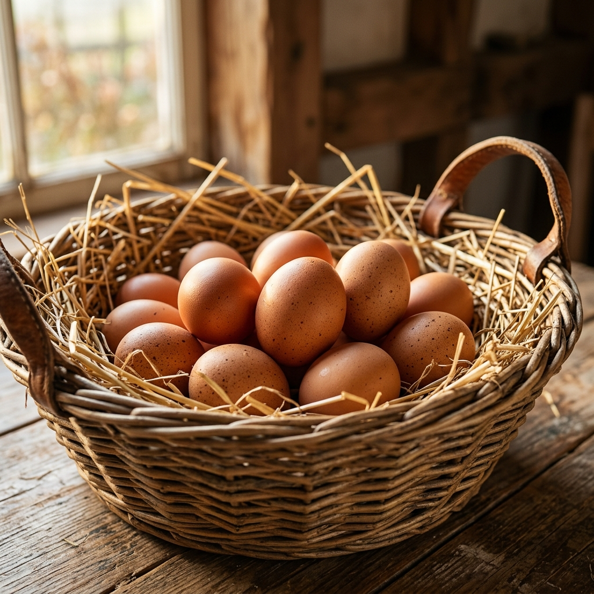

Fresh, Natural Farm Eggs & Poultry Direct to You
Taste the difference of true pasture-raised quality. Grown with sustainable practices, loved by local families, and trusted by top chefs.

Our Farm-Fresh Promise
We believe in wholesome, transparent agriculture. Here is what makes our eggs and poultry exceptional.

Gathered Daily
Every single egg is hand-collected in the morning and inspected for peak quality. Guaranteed fresh delivery to your door.

100% Organic Diet
Our hens roam freely on nutrient-rich pastures and eat certified organic feed. No hormones, no GMOs, no synthetic additives.

Animal Welfare First
Certified Humane standards. Nesting boxes, dust baths, and natural shelters ensure our flocks live stress-free, healthy lives.
Featured From Our Farm
Handpicked selections direct from our pastures to your dining table.

Pasture-Raised Brown Eggs
Rich yolk, sturdy shells, and incredible flavor. Our signature brown eggs are laid daily.

Organic Free-Range Eggs
Certified USDA organic. Laid by flocks fed exclusively organic grains with zero pesticide pasture.

Whole Free-Range Chicken
Tender, lean, and highly nutritious. Raised on rotating fields with access to natural feeds.

Why Families & Chefs Choose Our Farm
Since 1994, Feather & Yolk Farm has maintained a transparent, trace-to-coop pipeline. We don't warehouse our products; we pack them straight from nesting boxes to refrigerated delivery trucks.
-
✓
Farm-to-Door in 24 Hours: Eggs delivered fresh within a day of being laid.
-
✓
Zero Additives or Injections: Safe, antibiotic-free meats you can serve with confidence.
-
✓
Environmental Stewardship: Solar-powered egg washing facilities and plastic-free packaging.
Loved by Home Cooks & Culinary Experts
Read what our neighborhood and restaurant partners say about Feather & Yolk.
"The yolk color is a rich orange that you just can't find in grocery store eggs. I use them for my baking business, and my customers immediately noticed the fluffier textures."
"As an executive chef, consistency is vital. Feather & Yolk delivers fresh pasture chickens weekly. The meat is tender and flavor-packed. Excellent wholesale customer support."
"My kids love visiting during their farm tours, and buying their fresh organic eggs directly has become a weekly family ritual. Healthy chickens make healthy eggs!"